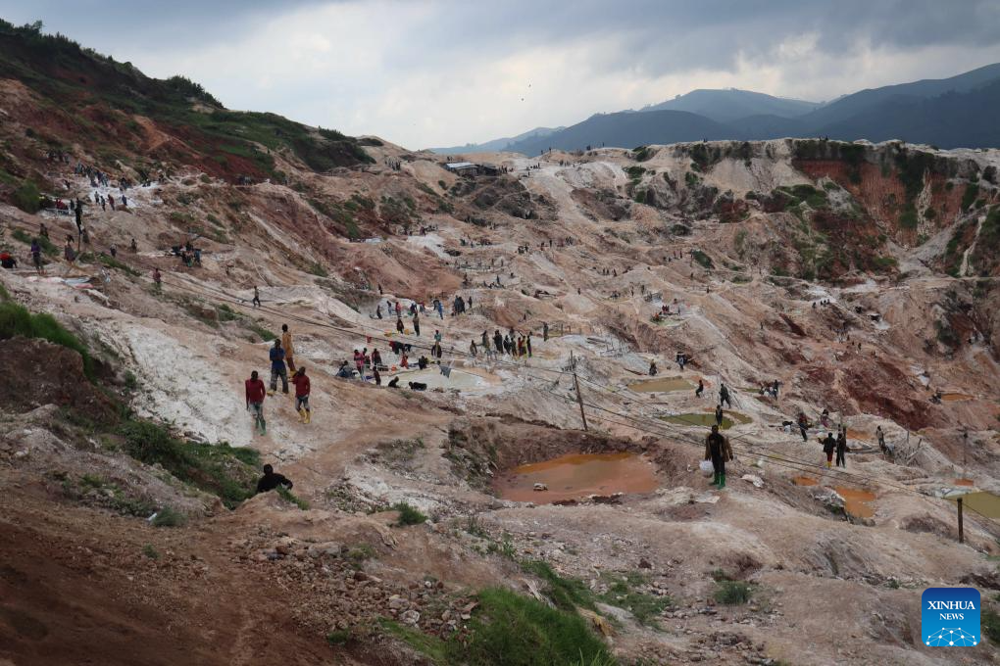
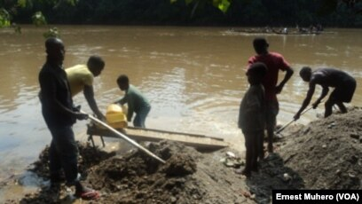
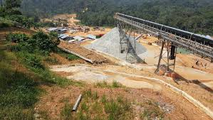
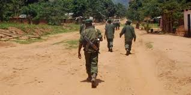

Coltan Extraction Areas
Most coltan is mined in regions such as North Kivu, South Kivu and Ituri. These areas, often unstable and controlled by armed groups, are critical to the global technology market. Access to these mines takes place in precarious conditions and the local populations suffer the social and environmental consequences.

Mines are located in resource-rich but very unstable areas.
The management of these resources often takes place without rules, leading to serious human rights violations.
- Inhumane working conditions
- Child exploitation
- Financing of armed groups




Understanding the characteristics of the main extraction areas is essential to intervene effectively. The listed cities play strategic roles in coltan trafficking.
| City | Main Feature |
|---|---|
| Walikale | Rich in coltan |
| Shabunda | Artisanal mines |
| Bisie | Large-scale mining |
| Fizi | Strategic area |